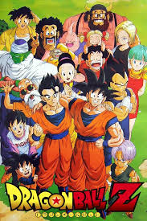

El anime es un término utilizado para referirse a la animación de origen japonés. Es un estilo de animación que abarca una amplia variedad de géneros y temas, que van desde la fantasía y la ciencia ficción hasta el romance y el drama. El anime puede ser tanto para niños como para adultos, y se produce en diversas formas, incluyendo series de televisión, películas, OVAS (Original Video Animations) y cortometrajes. El estilo visual del anime es distintivo y a menudo incluye personajes con grandes ojos, expresiones exageradas y un enfoque detallado en los fondos y la acción. El anime es muy popular en Japón y ha ganado seguidores en todo el mundo, con una gran base de fanáticos internacionales.
"Dragon Ball" es una de las franquicias de anime y manga más icónicas y influyentes creadas por Akira Toriyama. La serie original de manga se publicó por primera vez en 1984 y se serializó hasta 1995 en la revista Weekly Shnen Jump de Shueisha. La historia sigue las aventuras de Son Goku, un joven guerrero con cola de mono con habilidades de lucha increíbles, mientras viaja por el mundo en busca de las legendarias Bolas de Dragón, que pueden conceder cualquier deseo cuando se re煤nen.
"Naruto" es una popular serie de manga y anime creada por Masashi Kishimoto. La historia sigue las aventuras de Naruto Uzumaki, un joven ninja con el sueño de convertirse en el líder de su aldea y ser reconocido como el ninja más poderoso, el Hokage. Sin embargo, Naruto lleva consigo un oscuro secreto: está albergando en su interior al Zorro de Nueve Colas, una criatura legendaria que causó destrucción en la aldea años atrás. La serie se desarrolla en un mundo ficticio donde los ninjas luchan entre sí y se enfrentan a amenazas externas. A lo largo de la historia, Naruto forma amistades profundas y se enfrenta a enemigos poderosos, mientras aprende lecciones importantes sobre la amistad, el valor y el sacrificio.